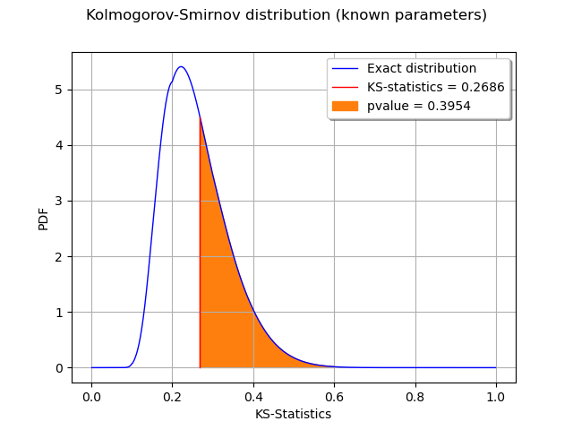

Note
Click here to download the full example code
The Kolmogorov-Smirnov p-value¶
In this example, we illustrate the calculation of the Kolmogorov-Smirnov p-value.
We generate a sample from a gaussian distribution.
We create a Uniform distribution with known parameters.
The Kolmogorov-Smirnov statistics is computed and plot on the empirical cumulated distribution function.
We plot the p-value as the area under the part of the curve exceeding the observed statistics.
import openturns as ot
import openturns.viewer as viewer
from matplotlib import pylab as plt
ot.Log.Show(ot.Log.NONE)
We generate a sample from a standard gaussian distribution.
dist = ot.Normal()
samplesize = 10
sample = dist.getSample(samplesize)
testdistribution = ot.Normal()
result = ot.FittingTest.Kolmogorov(sample, testdistribution, 0.01)
pvalue = result.getPValue()
pvalue
Out:
0.05574042215483521
KSstat = result.getStatistic()
KSstat
Out:
0.4031964324458183
Compute exact Kolmogorov PDF.
Create a function which returns the CDF given the KS distance.
def pKolmogorovPy(x):
y=ot.DistFunc_pKolmogorov(samplesize,x[0])
return [y]
pKolmogorov = ot.PythonFunction(1,1,pKolmogorovPy)
Create a function which returns the KS PDF given the KS distance: use the gradient method.
def kolmogorovPDF(x):
return pKolmogorov.gradient(x)[0,0]
def dKolmogorov(x,samplesize):
"""
Compute Kolmogorov PDF for given x.
x : a Sample, the points where the PDF must be evaluated
samplesize : the size of the sample
Reference
Numerical Derivatives in Scilab, Michael Baudin, May 2009
"""
n=x.getSize()
y=ot.Sample(n,1)
for i in range(n):
y[i,0] = kolmogorovPDF(x[i])
return y
def linearSample(xmin,xmax,npoints):
'''Returns a sample created from a regular grid
from xmin to xmax with npoints points.'''
step = (xmax-xmin)/(npoints-1)
rg = ot.RegularGrid(xmin, step, npoints)
vertices = rg.getVertices()
return vertices
n = 1000 # Number of points in the plot
s = linearSample(0.001,0.999,n)
y = dKolmogorov(s,samplesize)
def drawInTheBounds(vLow,vUp,n_test):
'''
Draw the area within the bounds.
'''
palette = ot.Drawable.BuildDefaultPalette(2)
myPaletteColor = palette[1]
polyData = [[vLow[i], vLow[i+1], vUp[i+1], vUp[i]] for i in range(n_test-1)]
polygonList = [ot.Polygon(polyData[i], myPaletteColor, myPaletteColor) for i in range(n_test-1)]
boundsPoly = ot.PolygonArray(polygonList)
return boundsPoly
Create a regular grid starting from the observed KS statistics.
nplot = 100
x = linearSample(KSstat,0.6,nplot)
Compute the bounds to fill: the lower vertical bound is zero and the upper vertical bound is the KS PDF.
vLow = [[x[i,0],0.] for i in range(nplot)]
vUp = [[x[i,0],pKolmogorov.gradient(x[i])[0,0]] for i in range(nplot)]
boundsPoly = drawInTheBounds(vLow,vUp,nplot)
boundsPoly.setLegend("pvalue = %.4f" % (pvalue))
curve = ot.Curve(s,y)
curve.setLegend("Exact distribution")
curveStat = ot.Curve([KSstat,KSstat],[0.,kolmogorovPDF([KSstat])])
curveStat.setColor("red")
curveStat.setLegend("KS-statistics = %.4f" % (KSstat))
graph = ot.Graph('Kolmogorov-Smirnov distribution (known parameters)', 'KS-Statistics', 'PDF', True, 'topright')
graph.setLegends(["Empirical distribution"])
graph.add(curve)
graph.add(curveStat)
graph.add(boundsPoly)
graph.setTitle("Kolmogorov-Smirnov distribution (known parameters)")
view = viewer.View(graph)
plt.show()

We observe that the p-value is the area of the curve which corresponds to the KS distances greater than the observed KS statistics.
Total running time of the script: ( 0 minutes 0.124 seconds)